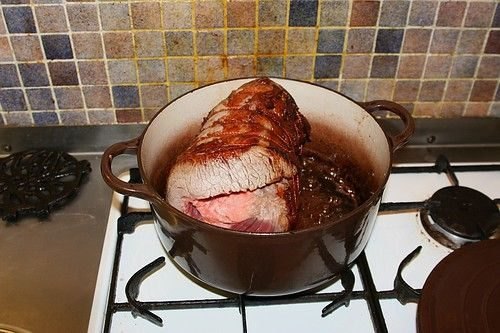

Beef Brisket Pot Roast

Photo: ndrwfgg (CC BY 2.0)
A braised brisket browned and simmered with onions and garlic in a catsup and beef broth sauce, which is then blended smooth and cooked with the sliced meat. It freezes well for up to three months.
Directions
- Heat oil in dutch oven. add brisket and brown on al lsides. Remove brisket, add onion and garlic. Cook over medium heat til tender. Add broth and remaining ingredients along with brisket. Bring to boil. Cover, reduce heat, simmer for 2 hours, remove brisket. Pour juices and onions into blender and blend to make nice sauce. Slice meat 1/4 thick. Return everything to pan and simmer 1 hour more. Meat and mixture can be frozen up to 3 months. Perfect to have around when surprise guests come around.
- Heat the oil in a Dutch oven. Add the brisket and brown on all sides, then remove the brisket.
- Add the onion and garlic. Cook over medium heat until tender.
- Add the beef broth and remaining ingredients (catsup, Worcestershire sauce, salt, and pepper) along with the brisket. Bring to a boil.
- Cover, reduce heat, and simmer for 2 hours. Remove the brisket.
- Pour the juices and onions into a blender and blend to make a nice sauce.
- Slice the meat 1/4 inch thick.
- Return everything to the pan and simmer 1 hour more.
- The meat and mixture can be frozen up to 3 months — perfect to have around when surprise guests come around.
Goes well with
https://lizotte.cool/recipe/beef-brisket-pot-roast.html